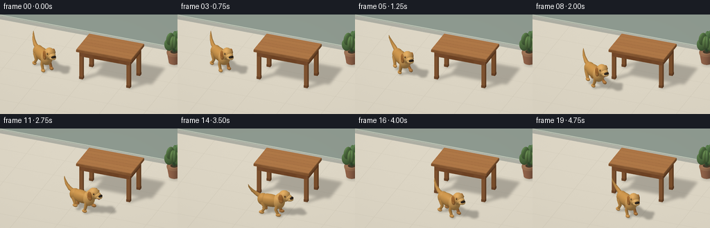
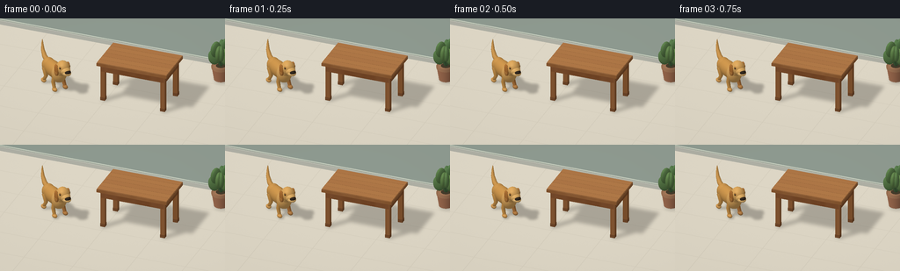

CODING AGENTS AS PIXEL WORLD MODELS
traex/GPT-6.1-Sol · dynamic_spatial_relationship_0000
点击播放 · 原生 RGB 像素
逐轮保存的候选
回放视频、检查图与代码变化。
每份候选均可单独播放。实际图片检查记录在下方工具轨迹中。
候选 01播放与检查图
点击播放 · 原生 RGB 像素


展开代码变化
--- 上一保存版本
+++ 本次保存版本
@@ -0,0 +1,303 @@
+"""Procedural, supersampled RGB animation. No models or external renderer."""
+from pathlib import Path
+import json, math
+import numpy as np
+from PIL import Image, ImageDraw, ImageFilter
+import artifact_io
+
+ROOT = Path(__file__).resolve().parent
+SPEC = json.loads((ROOT/'task_spec.json').read_text())
+W, H, SS = SPEC['width'], SPEC['height'], 3
+RW,RH=W*SS,H*SS
+SCALE=31.5*SS
+TARGET=np.array([-.25,-.35,.85])
+CAM=np.array([.32,-.82,.48]); CAM/=np.linalg.norm(CAM)
+RIGHT=np.cross(np.array([0.,0.,1.]),CAM); RIGHT/=np.linalg.norm(RIGHT)
+UP=np.cross(CAM,RIGHT)
+LIGHT=np.array([-3.,-4.,7.]); LIGHT/=np.linalg.norm(LIGHT)
+HALF=(LIGHT+CAM); HALF/=np.linalg.norm(HALF)
+rng=np.random.default_rng(7)
+
+def project(p):
+ q=np.asarray(p)-TARGET
+ return np.stack([RW/2+SCALE*(q@RIGHT),RH/2-SCALE*(q@UP),q@CAM],axis=-1)
+
+class Mesh:
+ def __init__(self,vertices,faces,normals,color,material='plain'):
+ self.v=np.asarray(vertices,float); self.f=np.asarray(faces,int)
+ self.n=np.asarray(normals,float); self.color=np.asarray(color,float); self.material=material
+
+# A smooth parametric ellipsoid; normals use the inverse transpose.
+def ellipsoid(c,r,col,rot=None,lat=12,lon=24,mat='plain'):
+ phi=np.linspace(0,np.pi,lat+1); theta=np.arange(lon)*2*np.pi/lon
+ p=np.array([[np.sin(a)*np.cos(b),np.sin(a)*np.sin(b),np.cos(a)] for a in phi for b in theta])
+ r=np.array(r); verts=p*r; ns=p/r
+ if rot is not None: verts=verts@rot.T; ns=ns@rot.T
+ verts+=np.array(c); ns/=np.linalg.norm(ns,axis=1)[:,None]
+ f=[]
+ for a in range(lat):
+ for b in range(lon):
+ i=a*lon+b;j=a*lon+(b+1)%lon
+ f.extend([(i,j,i+lon),(j,j+lon,i+lon)])
+ return Mesh(verts,f,ns,col,mat)
+
+def box(lo,hi,col,mat='plain'):
+ lo=np.array(lo); hi=np.array(hi)
+ verts=[]; faces=[]; normals=[]
+ for axis in range(3):
+ others=[i for i in range(3) if i!=axis]
+ for side in range(2):
+ ids=[]
+ for u,v in [(0,0),(1,0),(1,1),(0,1)]:
+ p=lo.copy();p[axis]=hi[axis] if side else lo[axis]
+ p[others[0]]=hi[others[0]] if u else lo[others[0]]
+ p[others[1]]=hi[others[1]] if v else lo[others[1]]
+ ids.append(len(verts));verts.append(p)
+ n=np.zeros(3);n[axis]=2*side-1;normals.append(n)
+ faces.extend([(ids[0],ids[1],ids[2]),(ids[0],ids[2],ids[3])])
+ return Mesh(verts,faces,normals,col,mat)
+
+def tube(points,radii,col,sides=12,mat='plain'):
+ points=np.array(points); radii=np.broadcast_to(radii,(len(points),))
+ vs=[];ns=[];fs=[]
+ for i,p in enumerate(points):
+ tangent=points[min(i+1,len(points)-1)]-points[max(i-1,0)]
+ tangent/=np.linalg.norm(tangent)
+ helper=np.array([0.,1.,0.]) if abs(tangent[1])<.9 else np.array([1.,0.,0.])
+ a=np.cross(tangent,helper);a/=np.linalg.norm(a);b=np.cross(tangent,a)
+ for j in range(sides):
+ n=a*np.cos(j*2*np.pi/sides)+b*np.sin(j*2*np.pi/sides)
+ vs.append(p+radii[i]*n);ns.append(n)
+ for i in range(len(points)-1):
+ for j in range(sides):
+ a=i*sides+j;b=i*sides+(j+1)%sides
+ fs.extend([(a,b,a+sides),(b,b+sides,a+sides)])
+ # cap disks
+ for end in [0,len(points)-1]:
+ center=len(vs);vs.append(points[end]);n=points[0]-points[1] if end==0 else points[-1]-points[-2];n/=np.linalg.norm(n);ns.append(n)
+ for j in range(sides):fs.append((center,end*sides+j,end*sides+(j+1)%sides))
+ return Mesh(vs,fs,ns,col,mat)
+
+def segment(a,b,r1,r2,col): return tube([a,b],[r1,r2],col)
+
+def render(meshes,image,depth):
+ for m in meshes:
+ pr=project(m.v)
+ # diffuse plus soft polished highlights, smoothly interpolated
+ nl=np.maximum(0,m.n@LIGHT)
+ spec=np.maximum(0,m.n@HALF)**36
+ ambient=.61+.06*m.n[:,2]
+ colors=m.color[None,:]*(ambient+.36*nl[:,None] if False else (ambient+.36*nl)[:,None])
+ colors+=spec[:,None]*(13 if m.material!='wood' else 6)
+ for f in m.f:
+ tri=pr[f]; x=tri[:,0];y=tri[:,1]
+ xmin=max(0,int(np.floor(x.min())));xmax=min(RW-1,int(np.ceil(x.max())))
+ ymin=max(0,int(np.floor(y.min())));ymax=min(RH-1,int(np.ceil(y.max())))
+ if xmin>xmax or ymin>ymax:continue
+ den=(y[1]-y[2])*(x[0]-x[2])+(x[2]-x[1])*(y[0]-y[2])
+ if abs(den)<1e-7:continue
+ xx,yy=np.meshgrid(np.arange(xmin,xmax+1)+.5,np.arange(ymin,ymax+1)+.5)
+ a=((y[1]-y[2])*(xx-x[2])+(x[2]-x[1])*(yy-y[2]))/den
+ b=((y[2]-y[0])*(xx-x[2])+(x[0]-x[2])*(yy-y[2]))/den
+ c=1-a-b
+ z=a*tri[0,2]+b*tri[1,2]+c*tri[2,2]
+ region=depth[ymin:ymax+1,xmin:xmax+1]
+ keep=(a>=-1e-5)&(b>=-1e-5)&(c>=-1e-5)&(z>region)
+ if not np.any(keep):continue
+ cc=colors[f]
+ rgb=a[...,None]*cc[0]+b[...,None]*cc[1]+c[...,None]*cc[2]
+ if m.material=='wood':
+ p=a[...,None]*m.v[f[0]]+b[...,None]*m.v[f[1]]+c[...,None]*m.v[f[2]]
+ # flowing long grain with occasional fine, darker fibers
+ grain=(np.sin(p[...,1]*96+2.4*np.sin(p[...,0]*2.5)+.6*np.sin(p[...,0]*13))+
+ .3*np.sin(p[...,1]*237+1.8*np.sin(p[...,0]*7)))
+ rgb+=grain[...,None]*3.3
+ image[ymin:ymax+1,xmin:xmax+1][keep]=np.clip(rgb[keep],0,255)
+ region[keep]=z[keep]
+
+def shadow(meshes,blur=2.0):
+ img=Image.new('L',(RW,RH));d=ImageDraw.Draw(img)
+ for m in meshes:
+ p=m.v.copy();p-=p[:,2,None]*LIGHT[None,:]/LIGHT[2];p[:,2]=.003
+ xy=project(p)[:,:2]
+ for f in m.f:
+ d.polygon([tuple(a) for a in xy[f]],fill=255)
+ return np.array(img.filter(ImageFilter.GaussianBlur(blur*SS)),float)/255
+
+# Ground: wide warm stone tiles, physically projected in the orthographic view.
+yy,xx=np.mgrid[:RH,:RW]
+q=TARGET[None,None,:]+((xx-RW/2)/SCALE)[...,None]*RIGHT+((RH/2-yy)/SCALE)[...,None]*UP
+lam=-q[...,2]/CAM[2]
+ground=q+lam[...,None]*CAM
+base_depth=(ground-TARGET)@CAM
+texture=rng.normal(0,.35,(RH,RW))
+grad=np.clip((ground[...,1]+4)/9,0,1)
+base=np.empty((RH,RW,3),float)
+for ch,c in enumerate([218,211,194]):base[...,ch]=c+grad*5+texture
+# tile joints without distracting perspective lines
+tx=ground[...,0];ty=ground[...,1]
+gx=np.abs((tx+3.4)%1.9-.95);gy=np.abs((ty+2.8)%1.45-.725)
+joints=np.minimum(gx,gy)
+amount=np.exp(-(joints/.014)**2)
+base-=amount[...,None]*9
+
+static=[]
+# Quiet sage wall, baseboard and recessed panel trim.
+static.append(box([-8,3.7,0],[8,3.85,6],[183,198,185]))
+static.append(box([-8,3.61,.02],[8,3.72,.18],[224,225,211]))
+static.append(box([-8,3.63,.18],[8,3.75,.215],[202,210,194]))
+# A small bright window provides architectural scale without dominating.
+static.append(box([-3.9,3.59,1.62],[-1.4,3.69,3.48],[225,229,220]))
+static.append(box([-3.78,3.56,1.77],[-1.52,3.60,3.34],[159,196,205]))
+for x in [-3.78,-2.68,-1.56]:static.append(box([x,3.51,1.74],[x+.07,3.61,3.38],[234,236,224]))
+static.append(box([-3.83,3.49,2.50],[-1.46,3.61,2.57],[234,236,224]))
+static.append(box([-3.93,3.39,1.62],[-1.38,3.79,1.71],[237,234,220]))
+
+# Rectangular oak table, four separate legs and substantial apron.
+cx,cy=.55,.30
+xmin,xmax=cx-1.29,cx+1.29
+ymin,ymax=cy-.75,cy+.75
+wood=[157,101,57];edge=[143,88,49]
+table=[]
+for x in [xmin+.13,xmax-.13]:
+ for y in [ymin+.12,ymax-.12]:
+ table.append(box([x-.085,y-.085,.055],[x+.085,y+.085,1.54],wood,'wood'))
+ table.append(box([x-.090,y-.090,.035],[x+.090,y+.09,.16],[132,83,47],'wood'))
+for y in [ymin+.09,ymax-.09]:table.append(box([xmin+.065,y-.06,1.22],[xmax-.065,y+.06,1.49],edge,'wood'))
+for x in [xmin+.09,xmax-.09]:table.append(box([x-.06,ymin+.09,1.22],[x+.06,ymax-.09,1.49],edge,'wood'))
+table.append(box([xmin-.065,ymin-.065,1.47],[xmax+.065,ymax+.065,1.585],[167,109,62],'wood'))
+# Six cleanly fitted planks with small beveled-looking dark seams.
+for i in range(6):
+ y0=ymin-.055+i*(1.61/6)
+ col=[180+int(3*np.sin(i*2)),123+int(3*np.sin(i*2)),73+int(2*np.sin(i*2))]
+ table.append(box([xmin-.055,y0+.005,1.585],[xmax+.055,y0+1.61/6-.005,1.61],col,'wood'))
+
+# A ceramic pot and compact plant in the far right background.
+plant=[]
+plant.append(tube([[2.8,2.6,.06],[2.8,2.6,.55]],[.25,.33],[176,120,89],sides=24))
+plant.append(tube([[2.8,2.6,.52],[2.8,2.6,.61]],[.345,.345],[189,137,101],sides=24))
+plant.append(ellipsoid([2.8,2.6,.592],[.30,.30,.024],[69,61,44],lat=4))
+for i in range(11):
+ angle=i*2.4; z=.95+(i%4)*.14
+ ex=2.8+.24*np.cos(angle);ey=2.6+.25*np.sin(angle)
+ plant.append(segment([2.8,2.6,.58],[ex,ey,z],.025,.012,[70,102,64]))
+ rotang=angle
+ r=np.array([[np.cos(rotang),-np.sin(rotang),0],[np.sin(rotang),np.cos(rotang),0],[0,0,1]])
+ plant.append(ellipsoid([ex,ey,z],[.23,.12,.31],[92+(i%3)*5,130+(i%3)*4,79],rot=r,lat=9,lon=16))
+static+=plant
+# sunlight table cast shadow
+shadow_static=shadow(table+plant,2.0)
+base*=1-.23*shadow_static[...,None]
+# Render fixed background once, leaving the depth buffer available for dog occlusion.
+render(static+table,base,base_depth)
+static_base=base.copy();static_depth=base_depth.copy()
+floor_depth=(ground-TARGET)@CAM
+floor_mask=np.abs(static_depth-floor_depth)<.0001
+
+GOLD=[206,151,78]; LITGOLD=[222,169,95]; DARKGOLD=[180,119,60]
+
+def dog(x,y,heading,phase,moving,look=0):
+ parts=[]
+ bounce=.035*moving*(1+np.cos(phase*2))
+ def E(c,r,col=GOLD,rot=None,lat=12,lon=24):
+ c=np.array(c,float);c[2]+=bounce;parts.append(ellipsoid(c,r,col,rot,lat,lon))
+ def T(ps,rs,col=GOLD,sides=12):
+ ps=np.array(ps,float);ps[:,2]+=bounce;parts.append(tube(ps,rs,col,sides))
+ # A soft, rounded chest, tapering barrel and muscular haunches.
+ E([-.10,0,.65],[.59,.265,.305],GOLD)
+ E([.33,0,.67],[.28,.283,.36],LITGOLD)
+ E([-.45,0,.65],[.26,.245,.285],GOLD)
+ E([.39,-.015,.71],[.21,.238,.28],[230,181,111])
+ # Quadruped gait; paired feet stay near the ground while the opposite pair lifts.
+ for fore in [False,True]:
+ for side in [-1,1]:
+ hipx=.34 if fore else -.43
+ p=phase+(0 if fore else np.pi)+(0 if side==-1 else np.pi*.87)
+ reach=.25*np.sin(p)*moving
+ lift=max(0,np.cos(p))*.19*moving
+ footx=hipx+reach+(.045 if fore else -.005)
+ z=.082+lift
+ top=[hipx,side*.176,.60]
+ knee=[hipx+(-.085 if fore else .15)-reach*.30,side*.205,.33+lift*.27]
+ foot=[footx,side*.218,z]
+ col=GOLD if side==-1 else DARKGOLD
+ T([top,knee,foot],[.104,.073,.060],col)
+ E(foot,[.13,.085,.075],[214,157,85] if side==-1 else [182,126,67],lat=9,lon=16)
+ # discreet toe grooves
+ if side==-1:
+ for dy in [-.026,.022]:
+ T([[footx+.071,side*.218+dy,z+.045],[footx+.117,side*.218+dy,z+.022]],[.005,.003],[159,109,57],sides=6)
+ # lifted, curved Labrador tail, wagging gently
+ wag=.12*np.sin(phase*.75+1)
+ T([[-.54,0,.77],[-.75,0,.86],[-.96,wag*.4,1.02],[-1.10,wag,1.22],[-1.13,wag*1.2,1.34]], [.105,.092,.067,.035,.009],GOLD,sides=14)
+ # neck and red fabric collar, oriented across the neck
+ E([.43,0,.86],[.24,.227,.27],LITGOLD)
+ T([[.427,0,.812],[.493,0,.838]],[.234,.228],[155,51,39],sides=32)
+ E([.479,-.229,.815],[.052,.018,.045],[216,175,72],lat=7,lon=12)
+ # Head group rotates subtly to watch the camera after arriving.
+ head=[]
+ def HE(c,r,col,rot=None,lat=12,lon=24):head.append(ellipsoid(c,r,col,rot,lat,lon))
+ HE([.615,0,1.025],[.28,.24,.273],LITGOLD)
+ HE([.76,0,.986],[.24,.191,.167],[227,177,103])
+ HE([.876,0,.943],[.195,.165,.108],[237,190,118])
+ HE([.976,0,1.000],[.084,.123,.065],[50,40,31],lat=10,lon=20)
+ HE([1.031,-.042,1.022],[.013,.032,.014],[113,98,82],lat=5,lon=10)
+ # dark mouth curve below the muzzle, little pink tongue when running
+ head.append(tube([[.88,-.148,.926],[.966,-.103,.912],[.993,-.039,.915]],[.007,.009,.005],[79,56,36],sides=8))
+ if moving>.1:
+ HE([.95,-.074,.892],[.06,.041,.055],[195,109,99],lat=8,lon=16)
+ # Eyes sit on the rounded front-side planes; white highlights.
+ for side in [-1,1]:
+ HE([.731,side*.182,1.113],[.057,.035,.060],[185,128,62],lat=9,lon=16)
+ HE([.745,side*.203,1.117],[.032,.017,.036],[37,30,24],lat=9,lon=16)
+ HE([.752,side*.218,1.132],[.010,.006,.011],[246,240,215],lat=5,lon=10)
+ # floppy rounded ears hang from the sides of the cranium
+ a=side*.14
+ rot=np.array([[np.cos(a),0,np.sin(a)],[0,1,0],[-np.sin(a),0,np.cos(a)]])
+ HE([.552,side*.234,.968],[.125,.067,.224],[178,115,53],rot=rot)
+ HE([.56,side*.258,.876],[.109,.045,.128],[188,127,63],rot=rot)
+ # Apply head look around neck pivot, then global body heading.
+ hr=np.array([[np.cos(look),-np.sin(look),0],[np.sin(look),np.cos(look),0],[0,0,1]])
+ pivot=np.array([.43,0,.90])
+ for m in head:
+ m.v=(m.v-pivot)@hr.T+pivot;m.v[:,2]+=bounce;m.n=m.n@hr.T
+ parts+=head
+ turn=np.array([[np.cos(heading),-np.sin(heading),0],[np.sin(heading),np.cos(heading),0],[0,0,1]])
+ for m in parts:
+ m.v=m.v@turn.T+np.array([x,y,0]);m.n=m.n@turn.T
+ return parts
+
+def ease(t):t=np.clip(t,0,1);return t*t*(3-2*t)
+
+frames=[]
+for i in range(SPEC['frames']):
+ # Hold left of the table, then trot in a curve around its near-left corner.
+ if i<=3:
+ x,y=-2.65,.06;heading=-.69;moving=0.;phase=i*.55;look=0
+ elif i<=14:
+ u=(i-3)/11
+ # eased travel, derivative controls the turn along the route
+ s=ease(u)
+ x=-2.65+3.30*s;y=.06-1.97*np.sin(s*np.pi/2)
+ heading=np.arctan2(-1.97*np.pi/2*np.cos(s*np.pi/2),3.30)
+ moving=np.sin(np.pi*u)**.35
+ phase=(i-3)*2.05
+ look=-.12*ease((u-.7)/.3)
+ else:
+ x,y=.65,-1.91
+ heading=-.63*ease((i-14)/3)
+ moving=0.;phase=i*.65;look=-.15*ease((i-14)/3)
+ meshes=dog(x,y,heading,phase,moving,look)
+ im=static_base.copy();dep=static_depth.copy()
+ sh=shadow(meshes,1.35)
+ # Dog's diffuse shadow and a darker contact patch beneath its paws.
+ im[floor_mask]*=(1-.25*sh[floor_mask,None])
+ render(meshes,im,dep)
+ # Subtle photographic corner falloff and downsampling to clean antialiased RGB.
+ vignette=1-.028*((xx/RW-.5)**2+(yy/RH-.48)**2)
+ im=np.uint8(np.clip(im*vignette[...,None],0,255))
+ frame=Image.fromarray(im).resize((W,H),Image.Resampling.LANCZOS)
+ frames.append(np.asarray(frame))
+ print(f'Frame {i+1:02}/{SPEC["frames"]} rendered',flush=True)
+artifact_io.save(np.stack(frames).astype(np.uint8),ROOT)
+print('Saved RGB video artifacts.',flush=True)
可观测工具轨迹
实际执行的命令与返回图片。
命令 1exit 0
/bin/bash -lc "ls -la && cat prompt.txt && printf '\\n---RULES---\\n' && cat GENERATION_RULES.md && printf '\\n---SPEC---\\n' && cat task_spec.json"
命令 2exit 0
/bin/bash -lc "cat artifact_io.py && python - <<'PY'
import PIL, numpy
print('Pillow and numpy available')
PY"命令 3exit 1
/bin/bash -lc "cat > generate.py <<'PY'
\"\"\"Procedural, supersampled RGB animation. No models or external renderer.\"\"\"
from pathlib import Path
import json, math
import numpy as np
from PIL import Image, ImageDraw, ImageFilter
import artifact_io
ROOT = Path(__file__).resolve().parent
SPEC = json.loads((ROOT/'task_spec.json').read_text())
W, H, SS = SPEC['width'], SPEC['height'], 3
RW,RH=W*SS,H*SS
SCALE=31.5*SS
TARGET=np.array([-.25,-.35,.85])
CAM=np.array([.32,-.82,.48]); CAM/=np.linalg.norm(CAM)
RIGHT=np.cross(np.array([0.,0.,1.]),CAM); RIGHT/=np.linalg.norm(RIGHT)
UP=np.cross(CAM,RIGHT)
LIGHT=np.array([-3.,-4.,7.]); LIGHT/=np.linalg.norm(LIGHT)
HALF=(LIGHT+CAM); HALF/=np.linalg.norm(HALF)
rng=np.random.default_rng(7)
def project(p):
q=np.asarray(p)-TARGET
return np.stack([RW/2+SCALE*(q@RIGHT),RH/2-SCALE*(q@UP),q@CAM],axis=-1)
class Mesh:
def __init__(self,vertices,faces,normals,color,material='plain'):
self.v=np.asarray(vertices,float); self.f=np.asarray(faces,int)
self.n=np.asarray(normals,float); self.color=np.asarray(color,float); self.material=material
# A smooth parametric ellipsoid; normals use the inverse transpose.
def ellipsoid(c,r,col,rot=None,lat=12,lon=24,mat='plain'):
phi=np.linspace(0,np.pi,lat+1); theta=np.arange(lon)*2*np.pi/lon
p=np.array([[np.sin(a)*np.cos(b),np.sin(a)*np.sin(b),np.cos(a)] for a in phi for b in theta])
r=np.array(r); verts=p*r; ns=p/r
if rot is not None: verts=verts@rot.T; ns=ns@rot.T
verts+=np.array(c); ns/=np.linalg.norm(ns,axis=1)[:,None]
f=[]
for a in range(lat):
for b in range(lon):
i=a*lon+b;j=a*lon+(b+1)%lon
f.extend([(i,j,i+lon),(j,j+lon,i+lon)])
return Mesh(verts,f,ns,col,mat)
def box(lo,hi,col,mat='plain'):
lo=np.array(lo); hi=np.array(hi)
verts=[]; faces=[]; normals=[]
for axis in range(3):
others=[i for i in range(3) if i"'!=axis]
for side in range(2):
ids=[]
for u,v in [(0,0),(1,0),(1,1),(0,1)]:
p=lo.copy();p[axis]=hi[axis] if side else lo[axis]
p[others[0]]=hi[others[0]] if u else lo[others[0]]
p[others[1]]=hi[others[1]] if v else lo[others[1]]
ids.append(len(verts));verts.append(p)
n=np.zeros(3);n[axis]=2*side-1;normals.append(n)
faces.extend([(ids[0],ids[1],ids[2]),(ids[0],ids[2],ids[3])])
return Mesh(verts,faces,normals,col,mat)
def tube(points,radii,col,sides=12,mat='"'plain'):
points=np.array(points); radii=np.broadcast_to(radii,(len(points),))
vs=[];ns=[];fs=[]
for i,p in enumerate(points):
tangent=points[min(i+1,len(points)-1)]-points[max(i-1,0)]
tangent/=np.linalg.norm(tangent)
helper=np.array([0.,1.,0.]) if abs(tangent[1])<.9 else np.array([1.,0.,0.])
a=np.cross(tangent,helper);a/=np.linalg.norm(a);b=np.cross(tangent,a)
for j in range(sides):
n=a*np.cos(j*2*np.pi/sides)+b*np.sin(j*2*np.pi/sides)
vs.append(p+radii[i]*n);ns.append(n)
for i in range(len(points)-1):
for j in range(sides):
a=i*sides+j;b=i*sides+(j+1)%sides
fs.extend([(a,b,a+sides),(b,b+sides,a+sides)])
# cap disks
for end in [0,len(points)-1]:
center=len(vs);vs.append(points[end]);n=points[0]-points[1] if end==0 else points[-1]-points[-2];n/=np.linalg.norm(n);ns.append(n)
for j in range(sides):fs.append((center,end*sides+j,end*sides+(j+1)%sides))
return Mesh(vs,fs,ns,col,mat)
def segment(a,b,r1,r2,col): return tube([a,b],[r1,r2],col)
def render(meshes,image,depth):
for m in meshes:
pr=project(m.v)
# diffuse plus soft polished highlights, smoothly interpolated
nl=np.maximum(0,m.n@LIGHT)
spec=np.maximum(0,m.n@HALF)**36
ambient=.61+.06*m.n[:,2]
colors=m.color[None,:]*(ambient+.36*nl[:,None] if False else (ambient+.36*nl)[:,None])
colors+=spec[:,None]*(13 if m.material"'!='"'wood' else 6)
for f in m.f:
tri=pr[f]; x=tri[:,0];y=tri[:,1]
xmin=max(0,int(np.floor(x.min())));xmax=min(RW-1,int(np.ceil(x.max())))
ymin=max(0,int(np.floor(y.min())));ymax=min(RH-1,int(np.ceil(y.max())))
if xmin>xmax or ymin>ymax:continue
den=(y[1]-y[2])*(x[0]-x[2])+(x[2]-x[1])*(y[0]-y[2])
if abs(den)<1e-7:continue
xx,yy=np.meshgrid(np.arange(xmin,xmax+1)+.5,np.arange(ymin,ymax+1)+.5)
a=((y[1]-y[2])*(xx-x[2])+(x[2]-x[1])*(yy-y[2]))/den
b=((y[2]-y[0])*(xx-x[2])+(x[0]-x[2])*(yy-y[2]))/den
c=1-a-b
z=a*tri[0,2]+b*tri[1,2]+c*tri[2,2]
region=depth[ymin:ymax+1,xmin:xmax+1]
keep=(a>=-1e-5)&(b>=-1e-5)&(c>=-1e-5)&(z>region)
if not np.any(keep):continue
cc=colors[f]
rgb=a[...,None]*cc[0]+b[...,None]*cc[1]+c[...,None]*cc[2]
if m.material=='wood':
p=a[...,None]*m.v[f[0]]+b[...,None]*m.v[f[1]]+c[...,None]*m.v[f[2]]
# flowing long grain with occasional fine, darker fibers
grain=(np.sin(p[...,1]*96+2.4*np.sin(p[...,0]*2.5)+.6*np.sin(p[...,0]*13))+
.3*np.sin(p[...,1]*237+1.8*np.sin(p[...,0]*7)))
rgb+=grain[...,None]*3.3
image[ymin:ymax+1,xmin:xmax+1][keep]=np.clip(rgb[keep],0,255)
region[keep]=z[keep]
def shadow(meshes,blur=2.0):
img=Image.new('L',(RW,RH));d=ImageDraw.Draw(img)
for m in meshes:
p=m.v.copy();p-=p[:,2,None]*LIGHT[None,:]/LIGHT[2];p[:,2]=.003
xy=project(p)[:,:2]
for f in m.f:
d.polygon([tuple(a) for a in xy[f]],fill=255)
return np.array(img.filter(ImageFilter.GaussianBlur(blur*SS)),float)/255
# Ground: wide warm stone tiles, physically projected in the orthographic view.
yy,xx=np.mgrid[:RH,:RW]
q=TARGET[None,None,:]+((xx-RW/2)/SCALE)[...,None]*RIGHT+((RH/2-yy)/SCALE)[...,None]*UP
lam=-q[...,2]/CAM[2]
ground=q+lam[...,None]*CAM
base_depth=(ground-TARGET)@CAM
texture=rng.normal(0,.35,(RH,RW))
grad=np.clip((ground[...,1]+4)/9,0,1)
base=np.empty((RH,RW,3),float)
for ch,c in enumerate([218,211,194]):base[...,ch]=c+grad*5+texture
# tile joints without distracting perspective lines
tx=ground[...,0];ty=ground[...,1]
gx=np.abs((tx+3.4)%1.9-.95);gy=np.abs((ty+2.8)%1.45-.725)
joints=np.minimum(gx,gy)
amount=np.exp(-(joints/.014)**2)
base-=amount[...,None]*9
static=[]
# Quiet sage wall, baseboard and recessed panel trim.
static.append(box([-8,3.7,0],[8,3.85,6],[183,198,185]))
static.append(box([-8,3.61,.02],[8,3.72,.18],[224,225,211]))
static.append(box([-8,3.63,.18],[8,3.75,.215],[202,210,194]))
# A small bright window provides architectural scale without dominating.
static.append(box([-3.9,3.59,1.62],[-1.4,3.69,3.48],[225,229,220]))
static.append(box([-3.78,3.56,1.77],[-1.52,3.60,3.34],[159,196,205]))
for x in [-3.78,-2.68,-1.56]:static.append(box([x,3.51,1.74],[x+.07,3.61,3.38],[234,236,224]))
static.append(box([-3.83,3.49,2.50],[-1.46,3.61,2.57],[234,236,224]))
static.append(box([-3.93,3.39,1.62],[-1.38,3.79,1.71],[237,234,220]))
# Rectangular oak table, four separate legs and substantial apron.
cx,cy=.55,.30
xmin,xmax=cx-1.29,cx+1.29
ymin,ymax=cy-.75,cy+.75
wood=[157,101,57];edge=[143,88,49]
table=[]
for x in [xmin+.13,xmax-.13]:
for y in [ymin+.12,ymax-.12]:
table.append(box([x-.085,y-.085,.055],[x+.085,y+.085,1.54],wood,'wood'))
table.append(box([x-.090,y-.090,.035],[x+.090,y+.09,.16],[132,83,47],'wood'))
for y in [ymin+.09,ymax-.09]:table.append(box([xmin+.065,y-.06,1.22],[xmax-.065,y+.06,1.49],edge,'wood'))
for x in [xmin+.09,xmax-.09]:table.append(box([x-.06,ymin+.09,1.22],[x+.06,ymax-.09,1.49],edge,'wood'))
table.append(box([xmin-.065,ymin-.065,1.47],[xmax+.065,ymax+.065,1.585],[167,109,62],'wood'))
# Six cleanly fitted planks with small beveled-looking dark seams.
for i in range(6):
y0=ymin-.055+i*(1.61/6)
col=[180+int(3*np.sin(i*2)),123+int(3*np.sin(i*2)),73+int(2*np.sin(i*2))]
table.append(box([xmin-.055,y0+.005,1.585],[xmax+.055,y0+1.61/6-.005,1.61],col,'wood'))
# A ceramic pot and compact plant in the far right background.
plant=[]
plant.append(tube([[2.8,2.6,.06],[2.8,2.6,.55]],[.25,.33],[176,120,89],sides=24))
plant.append(tube([[2.8,2.6,.52],[2.8,2.6,.61]],[.345,.345],[189,137,101],sides=24))
plant.append(ellipsoid([2.8,2.6,.592],[.30,.30,.024],[69,61,44],lat=4))
for i in range(11):
angle=i*2.4; z=.95+(i%4)*.14
ex=2.8+.24*np.cos(angle);ey=2.6+.25*np.sin(angle)
plant.append(segment([2.8,2.6,.58],[ex,ey,z],.025,.012,[70,102,64]))
rotang=angle
r=np.array([[np.cos(rotang),-np.sin(rotang),0],[np.sin(rotang),np.cos(rotang),0],[0,0,1]])
plant.append(ellipsoid([ex,ey,z],[.23,.12,.31],[92+(i%3)*5,130+(i%3)*4,79],rot=r,lat=9,lon=16))
static+=plant
# sunlight table cast shadow
shadow_static=shadow(table+plant,2.0)
base*=1-.23*shadow_static[...,None]
# Render fixed background once, leaving the depth buffer available for dog occlusion.
render(static+table,base,base_depth)
static_base=base.copy();static_depth=base_depth.copy()
floor_depth=(ground-TARGET)@CAM
floor_mask=np.abs(static_depth-floor_depth)<.0001
GOLD=[206,151,78]; LITGOLD=[222,169,95]; DARKGOLD=[180,119,60]
def dog(x,y,heading,phase,moving,look=0):
parts=[]
bounce=.035*moving*(1+np.cos(phase*2))
def E(c,r,col=GOLD,rot=None,lat=12,lon=24):
c=np.array(c,float);c[2]+=bounce;parts.append(ellipsoid(c,r,col,rot,lat,lon))
def T(ps,rs,col=GOLD,sides=12):
ps=np.array(ps,float);ps[:,2]+=bounce;parts.append(tube(ps,rs,col,sides))
# A soft, rounded chest, tapering barrel and muscular haunches.
E([-.10,0,.65],[.59,.265,.305],GOLD)
E([.33,0,.67],[.28,.283,.36],LITGOLD)
E([-.45,0,.65],[.26,.245,.285],GOLD)
E([.39,-.015,.71],[.21,.238,.28],[230,181,111])
# Quadruped gait; paired feet stay near the ground while the opposite pair lifts.
for fore in [False,True]:
for side in [-1,1]:
hipx=.34 if fore else -.43
p=phase+(0 if fore else np.pi)+(0 if side==-1 else np.pi*.87)
reach=.25*np.sin(p)*moving
lift=max(0,np.cos(p))*.19*moving
footx=hipx+reach+(.045 if fore else -.005)
z=.082+lift
top=[hipx,side*.176,.60]
knee=[hipx+(-.085 if fore else .15)-reach*.30,side*.205,.33+lift*.27]
foot=[footx,side*.218,z]
col=GOLD if side==-1 else DARKGOLD
T([top,knee,foot],[.104,.073,.060],col)
E(foot,[.13,.085,.075],[214,157,85] if side==-1 else [182,126,67],lat=9,lon=16)
# discreet toe grooves
if side==-1:
for dy in [-.026,.022]:
T([[footx+.071,side*.218+dy,z+.045],[footx+.117,side*.218+dy,z+.022]],[.005,.003],[159,109,57],sides=6)
# lifted, curved Labrador tail, wagging gently
wag=.12*np.sin(phase*.75+1)
T([[-.54,0,.77],[-.75,0,.86],[-.96,wag*.4,1.02],[-1.10,wag,1.22],[-1.13,wag*1.2,1.34]], [.105,.092,.067,.035,.009],GOLD,sides=14)
# neck and red fabric collar, oriented across the neck
E([.43,0,.86],[.24,.227,.27],LITGOLD)
T([[.427,0,.812],[.493,0,.838]],[.234,.228],[155,51,39],sides=32)
E([.479,-.229,.815],[.052,.018,.045],[216,175,72],lat=7,lon=12)
# Head group rotates subtly to watch the camera after arriving.
head=[]
def HE(c,r,col,rot=None,lat=12,lon=24):head.append(ellipsoid(c,r,col,rot,lat,lon))
HE([.615,0,1.025],[.28,.24,.273],LITGOLD)
HE([.76,0,.986],[.24,.191,.167],[227,177,103])
HE([.876,0,.943],[.195,.165,.108],[237,190,118])
HE([.976,0,1.000],[.084,.123,.065],[50,40,31],lat=10,lon=20)
HE([1.031,-.042,1.022],[.013,.032,.014],[113,98,82],lat=5,lon=10)
# dark mouth curve below the muzzle, little pink tongue when running
head.append(tube([[.88,-.148,.926],[.966,-.103,.912],[.993,-.039,.915]],[.007,.009,.005],[79,56,36],sides=8))
if moving>.1:
HE([.95,-.074,.892],[.06,.041,.055],[195,109,99],lat=8,lon=16)
# Eyes sit on the rounded front-side planes; white highlights.
for side in [-1,1]:
HE([.731,side*.182,1.113],[.057,.035,.060],[185,128,62],lat=9,lon=16)
HE([.745,side*.203,1.117],[.032,.017,.036],[37,30,24],lat=9,lon=16)
HE([.752,side*.218,1.132],[.010,.006,.011],[246,240,215],lat=5,lon=10)
# floppy rounded ears hang from the sides of the cranium
a=side*.14
rot=np.array([[np.cos(a),0,np.sin(a)],[0,1,0],[-np.sin(a),0,np.cos(a)]])
HE([.552,side*.234,.968],[.125,.067,.224],[178,115,53],rot=rot)
HE([.56,side*.258,.876],[.109,.045,.128],[188,127,63],rot=rot)
# Apply head look around neck pivot, then global body heading.
hr=np.array([[np.cos(look),-np.sin(look),0],[np.sin(look),np.cos(look),0],[0,0,1]])
pivot=np.array([.43,0,.90])
for m in head:
m.v=(m.v-pivot)@hr.T+pivot;m.v[:,2]+=bounce;m.n=m.n@hr.T
parts+=head
turn=np.array([[np.cos(heading),-np.sin(heading),0],[np.sin(heading),np.cos(heading),0],[0,0,1]])
for m in parts:
m.v=m.v@turn.T+np.array([x,y,0]);m.n=m.n@turn.T
return parts
def ease(t):t=np.clip(t,0,1);return t*t*(3-2*t)
frames=[]
for i in range(SPEC['frames']):
# Hold left of the table, then trot in a curve around its near-left corner.
if i<=3:
x,y=-2.65,.06;heading=-.69;moving=0.;phase=i*.55;look=0
elif i<=14:
u=(i-3)/11
# eased travel, derivative controls the turn along the route
s=ease(u)
x=-2.65+3.30*s;y=.06-1.97*np.sin(s*np.pi/2)
heading=np.arctan2(-1.97*np.pi/2*np.cos(s*np.pi/2),3.30)
moving=np.sin(np.pi*u)**.35
phase=(i-3)*2.05
look=-.12*ease((u-.7)/.3)
else:
x,y=.65,-1.91
heading=-.63*ease((i-14)/3)
moving=0.;phase=i*.65;look=-.15*ease((i-14)/3)
meshes=dog(x,y,heading,phase,moving,look)
im=static_base.copy();dep=static_depth.copy()
sh=shadow(meshes,1.35)
# Dog's diffuse shadow and a darker contact patch beneath its paws.
im[floor_mask]*=(1-.25*sh[floor_mask,None])
render(meshes,im,dep)
# Subtle photographic corner falloff and downsampling to clean antialiased RGB.
vignette=1-.028*((xx/RW-.5)**2+(yy/RH-.48)**2)
im=np.uint8(np.clip(im*vignette[...,None],0,255))
frame=Image.fromarray(im).resize((W,H),Image.Resampling.LANCZOS)
frames.append(np.asarray(frame))
print(f'Frame {i+1:02}/{SPEC[\"frames\"]} rendered',flush=True)
artifact_io.save(np.stack(frames).astype(np.uint8),ROOT)
print('Saved RGB video artifacts.',flush=True)
PY
python generate.py"命令 4exit 0
/bin/bash -lc "pwd; ls -la; touch test_write; ls -l test_write; python - <<'PY' from pathlib import Path import os for n in ['pixels.npz','frames','index.html','.tmp/test']: try: if n=='frames':Path(n).mkdir(exist_ok=True) else:Path(n).write_bytes(b'') print(n,'writable') except Exception as e: print(n,repr(e)) PY"
命令 5exit 0
/bin/bash -lc "python - <<'PY'
import numpy as np
from pathlib import Path
p=Path.cwd()/'pixels.npz'
np.savez_compressed(p,pixels=np.zeros((1,),dtype=np.uint32))
print('NPZ write succeeded')
PY
python generate.py"命令 6exit 0
/bin/bash -lc "python - <<'PY'
import numpy as np
from pathlib import Path
from PIL import Image
p=Path('.')
a=np.load('pixels.npz')['pixels']
assert a.shape==(144,256,20)
fs=sorted((p/'frames').glob('*.png'))
assert len(fs)==20
assert all(Image.open(f).size==(256,144) and Image.open(f).mode=='RGB' for f in fs)
for name in ['generate.py','pixels.npz','index.html','inspection.png','transition_check.png']:
assert (p/name).stat().st_size>0
print(name, (p/name).stat().st_size)
for name in ['test_write','.tmp/test']:
(p/name).unlink(missing_ok=True)
print('Verified: 20 RGB frames, 256x144, 4 fps, 5 seconds.')
PY"保存候选 1 份；完成命令 6 次；可验证图片返回 0 张。原始 API 响应与完整日志保留在本地。